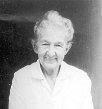
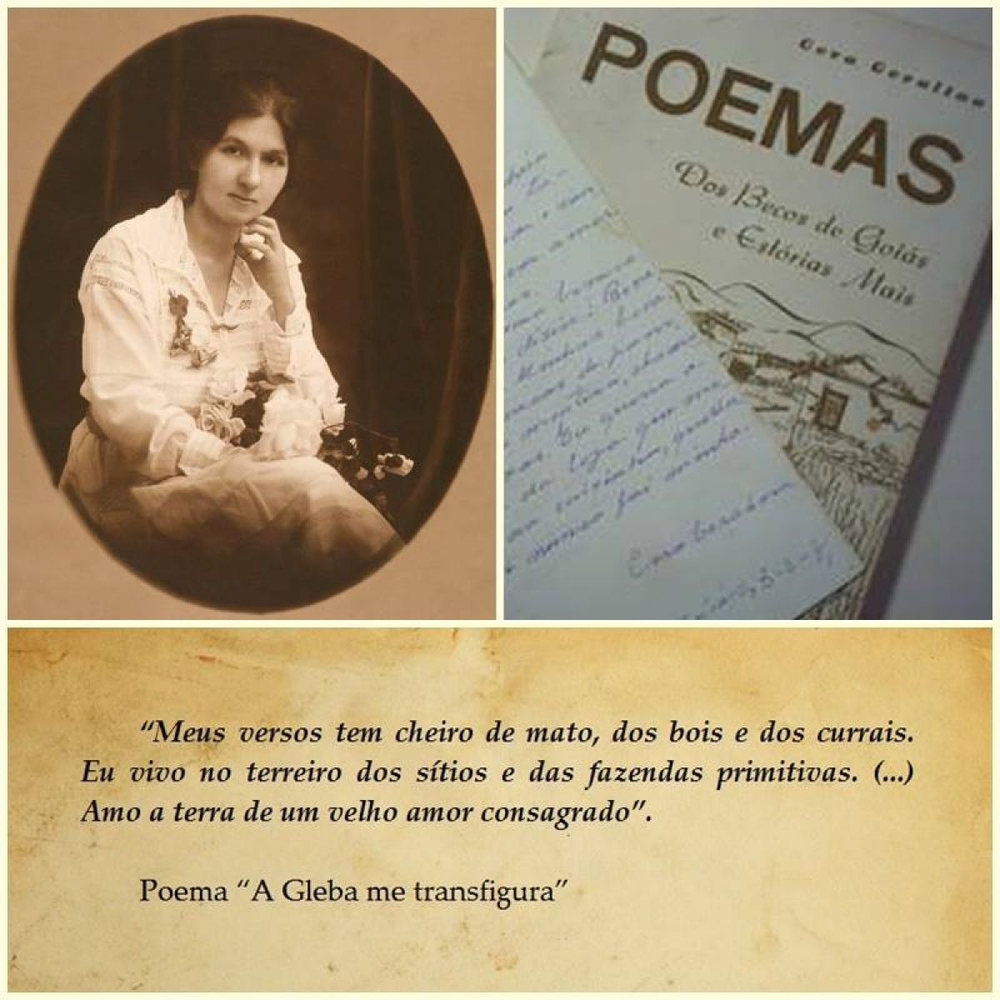
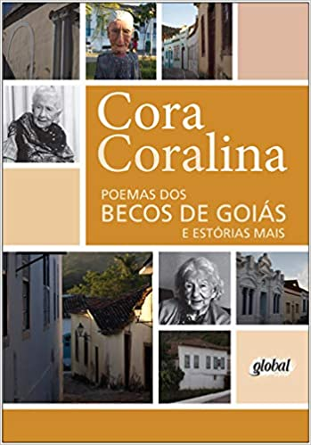

Anna Lins dos Guimarães Peixoto Bretas, ficou mais conhecida como Cora Coralina
Nasceu na cidade de Goiás, antiga Villa Boa de Goyaz, filha de Francisco de Paula Lins dos Guimarães Peixoto, desembargador nomeado por D. Pedro II, e Jacinta Luísa do Couto Brandão. Foi criada às margens do rio Vermelho, em uma casa comprada por sua família no século XIX
Poeta e contista brasileira de prestígio, Cora se tornou um dos marcos da nossa literatura. Iniciou sua carreira literária aos 14 anos com o conto Tragédia na Roça, publicado no Anuário Histórico e Geográfico do Estado de Goiás.
Casou-se com o advogado Cantídio Tolentino de Figueiredo Brêtas e teve seis filhos. O casamento a afastou de Goiás por 45 anos. Ao voltar às suas origens, viúva, iniciou uma nova atividade, a de doceira (conheça a obra Doceira e Poeta). Além de fazer seus doces, Aninha, como também era chamada, escreveu a maioria de seus versos nas horas vagas ou entre panelas e fogão.
Além de escrever, Cora Coralina, de volta a Goiás e já viúva, fazia doces para vender. Seu primeiro livro foi publicado em 1965, quando a autora tinha 75 anos. Mas só foi reconhecida aos 91 anos, quando o poeta Carlos Drummond de Andrade escreveu um artigo sobre ela para o Jornal do Brasil, em 1980.
Poemas dos Becos de Goiás e histórias Mais foi o primeiro livro da poetisa.
Foi publicado pela Editora José Olympio em 1965. A segunda edição da obra foi editada, em 1978, pelas Oficinas Gráficas ou Imprensa da Universidade Federal de Goiás (a editora da universidade não havia ainda sido criada, o que só acontecerá em 1980). Um exemplar dessa edição caiu nas mãos de Carlos Drummond de Andrade, o que acabou conferindo prestígio nacional a Cora Coralina, a partir de uma carta que o poeta lhe enviou, por meio da Editora, em julho de 1979 (esta carta saiu estampada na contracapa da terceira edição da obra). E, depois, de um artigo seu, publicado no 'Jornal do Brasil', sob o título "Cora Coralina, de Goiás", página 7 do Caderno B, em 27 de dezembro de 1980. , quando a poetisa já contabilizava 75 anos. Exatamente o mês e ano do lançamento da terceira edição, realizada agora pela já estruturada Editora da Universidade Federal de Goiás, ainda no reitorado de José Cruciano, o fundador dessa editora, que fez questão de publicar essa obra da autora dentro da Coleção Documentos Goianos". Número "9" dela. Palavras da ensaísta, poetisa e crítica literária, Darcy França Denófrio, extraídas da obra "Cora Coralina: celebração da volta", Goiânia: Cânone Editorial, 2006, página 188. Sendo diretor da editora da UFG (CEGRAF) o eminente professor, escritor e médico Joffre Marcondes de Rezende.
Retratatando o cotidiano dos Becos de Goiás, a obra reúne os poemas que consagraram o estilo da autora e a transformaram em uma das maiores poetisas de língua portuguesa do século XX, incluída na tradição moderna apesar do chamado insulamento.
